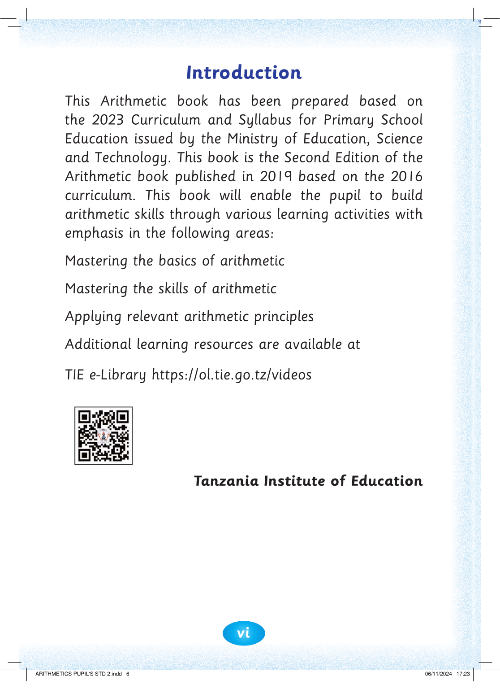

Introduction

This Arithmetic book has been prepared based on

the 2023 Curriculum and Syllabus for Primary School

Education issued by the Ministry of Education, Science

and Technology. This book is the Second Edition of the

Arithmetic book published in 2019 based on the 2016 curriculum. This book will enable the pupil to build arithmetic skills through various learning activities with emphasis in the following areas:
Mastering the basics of arithmetic
Mastering the skills of arithmetic
Applying relevant arithmetic principles
Additional learning resources are available at
TIE e-Library https://ol.tie.go.tz/videos
Tanzania Institute of Education


vi


ARITHMETICS PUPIL'S STD 2.indd 6
06/11/2024 17:23